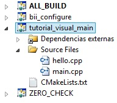

Basic Commands¶
Finding dependencies¶
External dependencies to your hive are retrieved from biicode servers when found to your dep folders. The configuration file for configuring your policies for this is named “policies.bii” in your hive “bii” folder.
If you simply want to find missing dependencies, type:
$ bii find
If you want to update already defined dependencies (as well as finding unresolved ones in the same step):
$ bii find --update
Note that all find commands depend on the values configured in such file. You can for example try to update your dependencies, but if there are no compatible versions that match your policies, you will not get such updates. E.g. a new ALPHA version for one of your dependencies will not be updated if you do not change your policy.
If you want to find compatible downgrades:
$ bii find --downgrade
These options can be combined:
$ bii find --update --downgrade
If you want to find any possible matching compatible version (not just updates or downgrades from your current one), type:
$ bii find --modify
The File Filter¶
The file below is the File Filter. The information included in this file determines the types of files that you want to include in your Hive.
# You can edit this file to add accepted and ignored file extensions
# Configuration is up to down hierarchical so first rule matched is the one applied.
#
# Format is as follows:
# <rule> <pattern> <desired_extension>
# rule: can be 'ACCEPT' or 'IGNORE'
# pattern: conforms Unix Filename Pattern Matching
# desired_extension: This indicates you'd like matched files to be treated
# as if they had that extension. It can be left blank
#
# Example: Accept files without extension to be treated as c headers
# ACCEPT [!.]* .h
# Compiled source #
IGNORE *.com
IGNORE *.class
IGNORE *.dll
IGNORE *.exe
IGNORE *.o
IGNORE *.so
IGNORE *.obj
IGNORE *.pyc
IGNORE *.dir
# Editor backups
IGNORE *~
# Hidden files
IGNORE *.*/*
# OS generated files
IGNORE Thumbs.db
IGNORE ehthumbs.db
IGNORE .DS_STORE
# Known source code
ACCEPT *.c
ACCEPT *.cpp
ACCEPT *.cc
ACCEPT *.h
ACCEPT *.hh
ACCEPT *.hxx
ACCEPT *.hpp
ACCEPT *.js
ACCEPT *.node
ACCEPT *.json
ACCEPT *.java
ACCEPT *.py
ACCEPT *.f
ACCEPT *.F
ACCEPT *.for
ACCEPT *.f90
# Text and markup
ACCEPT *.txt
ACCEPT *.md
ACCEPT *.htm
ACCEPT *.html
ACCEPT *.xml
ACCEPT *.bii
# Binaries, images
ACCEPT *.wav
ACCEPT *.mp3
ACCEPT *.gif
ACCEPT *.jpg
ACCEPT *.png
ACCEPT *.bmp
For example, if you want to use .ppm and .pgm images, you would have to add the following lines:
ACCEPT *.ppm
ACCEPT *.pgm
Policies¶
Start with a new hive in your Biicode workspace directory:
$bii new policies
Create a main.cpp which includes the block policyadvanced to use hello() method and its owner is tutorial user. It would be like this:
main.cpp
1 2 3 4 5 6 | #include "tutorial/policyadvanced/hello.h"
int main(void){
hello();
return 1;
}
|
If you check the output after runnig the code
$bii cpp:run
...
Hello STABLE
Examining the user tutorial/policyadvanced block in Biicode, there are published four versions with different tags:
| Published index | Version | Output method hello() |
|---|---|---|
| 3 | DEV “Hello DEVELOP” | |
| 2 | ALPHA “Hello ALPHA” | |
| 1 | BETA “Hello BETA” | |
| 0 | STABLE “Hello STABLE” |
Being index=0 the first version uploaded, each one has a different method hello() depending on its version.
The reason why your program has executed hello() of STABLE version is as follows. Look at folder ~/your_bii_workspace/your_hive/bii/ named policies.bii which is a YAML file and has this appearance:
default:
- block: . # Dot . is the pattern for all blocks
rules:
#First rule is accept with priority 1 all 'master' branches of the original
#creator of the block, with category STABLE
- [branch.name == "master" and branch.user == block.user, tag==STABLE, 1]
Then, your policy for this hive makes your searches are in master branchs of anyone user block and all the blocks as STABLE versions.
Changing your policy tag¶
Search BETA versions¶
Modify the policies.bii
- [branch.name == "master" and branch.user == block.user, tag==BETA, 1]
You have just modified your default policy file, then you have to write in console:
$ bii find --update
Finding missing dependencies in server
Analyzing compatibility for found dependencies...
Updated block!
Dependencies resolved in server:
All dependencies resolved
Updated dependencies:
tutorial/tutorial/policyadvanced/master:#1
Saving files on disk
Computing dependencies
Saving dependences on disk
Run your code:
$ bii cpp:run
...
Hello BETA
Like you can see, you are using BETA version!
Advanced tag selection¶
Finally, you could look for by published order with your tags. For example, if you write:
- [branch.name == "master" and branch.user == block.user, tag>DEV, 1]
This type will look for any block with any tag published before DEV version block uploaded to Biicode.
Update the dependencies again and run the code:
$ bii find --update
...
$ bii cpp:run
...
Hello ALPHA
Given that the ALPHA version was published before the DEV one, it is the chosen to resolve your dependency.
Special attention¶
Modify your policies.bii again to get the last version (in this example DEV version)
- [branch.name == "master" and branch.user == block.user, tag==DEV, 1]
Once more find the dependencies and execute:
$bii find --update
...
$bii cpp:run
...
Hello DEVELOP
However if you try to change the policies to link with an older version (for example, BETA version), you will get this output:
$ bii find --update
Finding missing dependencies in server
Analyzing compatibility for found dependencies...
Everything was up to date
Computing dependencies
Saving dependences on disk
You could get an older version after using an updated one just like that:
$ bii find --update --downgrade
Analyzing compatibility for found dependencies...
Updated block!
Dependencies resolved in server:
All dependencies resolved
Updated dependencies:
tutorial/tutorial/policyadvanced/master:#1
Saving files on disk
Computing dependencies
Saving dependences on disk
Changing your policy file for all your new hives¶
You could be sure to keep a specified policies for all the new hives. It is possible!
In your Biicode workspace, at folder bii, you have another policy file named default_policies.bii. The changes that you make here will be copied to all new hives and not old hives.
Custom Settings¶
The settings.bii file defines the tools that you want to use and their corresponding settings. This file is created when you create a new hive in the bii folder, its parameters are as follows:
cpp settings:¶
Configurable parameters are as shown below. It is important to keep the file format for correct interpretation:
Compiler:
- Family: GNU, MINGW, VC, JAVAC
Runner
- Family: Java, Node, Python
Builder:
Family: MSBUILD, MAKE, MINGW, NMake, ANT, MAVEN
Builder type: to define the different types of builder you want to use:
- None, Debug, Release, RelWithDebInfo, MinSizeRel
Configurer:
- Family: CMake
IDE:
- Family: ECLIPSE, NETBEANS, VISUAL, CODEBLOCKS
- Subfamily: CDT, PYDEV, JAVA, J2EE
An example of how to write the settings to cpp is the following:
cpp:
builder: {family: MINGW}
compiler: {family: MINGW}
ide: {family: ECLIPSE, subfamily: CDT}
build_type: debug
Using and IDE¶
Eclipse¶
First of all, you need to configure your project. Initialize your default C++ settings writting:
$ bii cpp:init
...
These are your default settings for this Hive
Builder: MINGW
Compiler: MINGW
If you want to change it, you have to modify this file:
./hive_name/bii/settings.bii
Inside the bii folder of you hive, change the file settings.bii:
cpp:
builder: {family: MINGW}
compiler: {family: MINGW}
os: {arch: 32bit, family: Windows, subfamily: '8', version: 6.2.9200}
includes the following lines:
cpp:
builder: {family: MINGW}
compiler: {family: MINGW}
ide: {family: ECLIPSE, subfamily: CDT}
build_type: debug
os: {arch: 32bit, family: Windows, subfamily: '8', version: 6.2.9200}
Now, copy the code from your hello word tutorial into the block folder and write.Now, if you configure the project with these settings, the output in the console would be:
$ bii cpp:configure
...
invoking cmake -G "Eclipse CDT4 - MinGW Makefiles" -Wno-dev ../src
-- The C compiler identification is GNU 4.6.2
-- The CXX compiler identification is GNU 4.6.2
-- Could not determine Eclipse version, assuming at least 3.6 (Helios). Adjust CMAKE_ECLIPSE_VERSION if this is wrong.
-- Check for working C compiler: C:/MinGW/bin/gcc.exe
-- Check for working C compiler: C:/MinGW/bin/gcc.exe -- works
-- Detecting C compiler ABI info
-- Detecting C compiler ABI info - done
-- Check for working CXX compiler: C:/MinGW/bin/g++.exe
-- Check for working CXX compiler: C:/MinGW/bin/g++.exe -- works
-- Detecting CXX compiler ABI info
-- Detecting CXX compiler ABI info - done
-- Configuring done
-- Generating done
-- Build files have been written to: [hive_build_folder]
if you write $ bii cpp:run, you will see the following message:
invoking cmake -G "Eclipse CDT4 - MinGW Makefiles" -Wno-dev ../src
-- Could not determine Eclipse version, assuming at least 3.6 (Helios). Adjust CMAKE_ECLIPSE_VERSION if this is wrong.
-- Configuring done
-- Generating done
-- Build files have been written to: [hive_build_folder]
[!] You have configured an IDE setup
[!] Use ECLIPSE to build your project
[!] Use ECLIPSE to run your project
Note: when you define other IDE type, you have to compile and execute with this new one as indicated in the last two lines of the output console.
Finally, you are ready to open your project with Eclipse. The first step is to import the project:
- File > import...
- general > Existing Projects into Workspace and clic next.
- Select root directory: find the build folder of your hive and click accept.
- Into the projects box, you should see a project already selected. Click finish
Now you have your project in eclipse workspace with a following folder tree like this:

For this tutorial our user name is tutorial and our block name is eclipse.
If you want to add any file, just click right mouse button on the folder on your block and create a new file
You only have to change the run configuration, for this:
- Right click on your_blockname@build.
- Run As > Run Configurations
- New launch configuration
- In the Application C/C++ box insert .../blockname/bin/username_blockname_main.exe
And this is all you need to work as usual in eclipse.
Microsoft Visual Studio¶
First of all, you need to inicialize your default C++ settings with the following command:
$ bii cpp:init
...
These are your default settings for this Hive
Builder: MINGW
Compiler: MINGW
If you want to change it, you have to modify this file:
./hive_name/bii/settings.bii
The settings.bii is a YAML file which contains:
cpp:
builder: {family: MINGW}
compiler: {family: MINGW}
os: {arch: 32bit, family: Windows, subfamily: '7', version: 6.1.7601}
If you want change your IDE to build your project with Visual Studio you should add the following command line and take care with the spaces you write because it must be written perfect (look at builder and compiler definitions lines):
cpp:
ide: {family: VISUAL, version: 10.0}
builder: {family: MINGW}
compiler: {family: MINGW}
os: {arch: 32bit, family: Windows, subfamily: '7', version: 6.1.7601}
Now, copy the code from your hello word tutorial into the block folder. You just choose Visual Studio as IDE with the version 10.0, i.e Visual Studio 2010. Now, if you configure the project with these settings, the output in the console would be:
$bii cpp:configure
...
invoking cmake -G "Visual Studio 10" -Wno-dev ../src
-- The C compiler identification is MSVC 16.0.40219.1
-- The CXX compiler identification is MSVC 16.0.40219.1
-- Check for working C compiler using: Visual Studio 10
-- Check for working C compiler using: Visual Studio 10 -- works
-- Detecting C compiler ABI info
-- Detecting C compiler ABI info - done
-- Check for working CXX compiler using: Visual Studio 10
-- Check for working CXX compiler using: Visual Studio 10 -- works
-- Detecting CXX compiler ABI info
-- Detecting CXX compiler ABI info - done
-- Configuring done
-- Generating done
-- Build files have been written to: [hive_build_folder]
If you write $ bii cpp:run, you will see the following message:
invoking cmake -G "Visual Studio 10" -Wno-dev ../src
-- Configuring done
-- Generating done
-- Build files have been written to: [hive_build_folder]
[!] You have configured an IDE setup
[!] Use VISUAL to build your project
[!] Use VISUAL to run your project
Note: when you define other IDE type, you have to compile and execute with this new one as indicated in the last two lines of the output console.
Finally, you are ready to open your project with Visual Studio. Just run the .sln file inside the build folder of your hive and will open a project with the following folder structure. Your code is located in the third folder:
